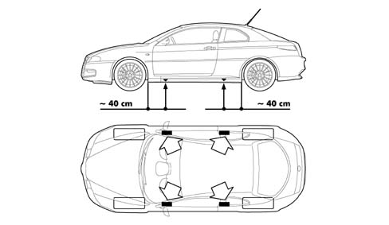

VEHICLE LIFTING POINTS
- Path
- Technical Data > GENERAL INFORMATION > VEHICLE TOWING AND LIFTING POINTS > VEHICLE LIFTING POINTS
- Kind
- technical data / specifications
- Applies to
- all engines; all production periods
- Interactive page
- https://sloeber94.github.io/elrnDB-aGt/en/#/125000011
Applies to: all engines; all production periods
The vehicle should be raised at the side only placing the ends of the arms of the workshop lift in the areas illustrated in the diagram about 40 cm from the wheel arch profile.
